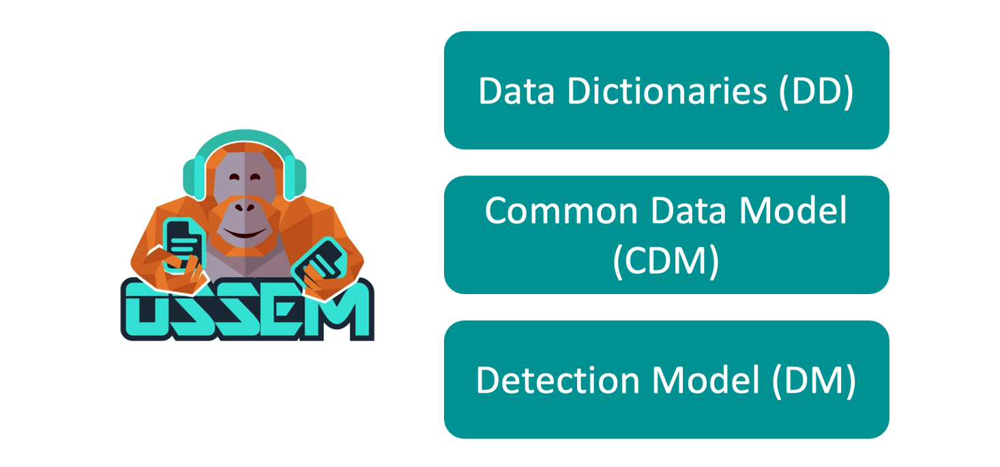
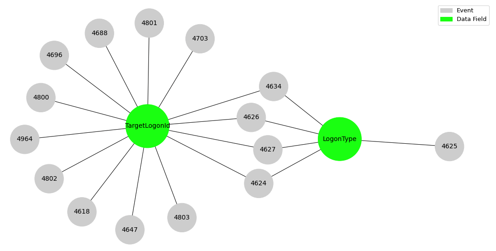
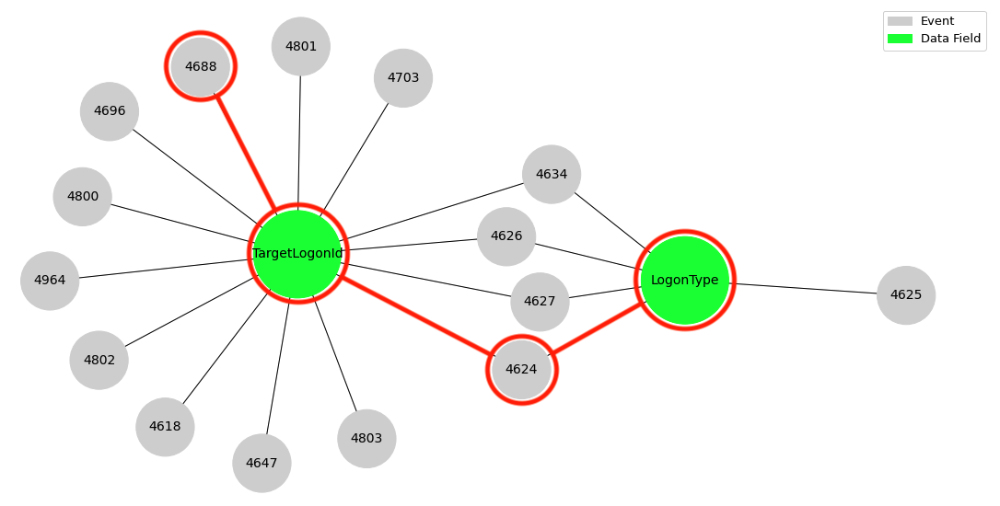

OSSEM Data Dictionaries: Correlating Security Telemetry
In this blogpost, we will share a basic use case on correlating security telemetry (Microsoft Security Auditing) through common data fields documented in OSSEM - Data Dictionaries. We will use original data field names to represent the interaction among security event logs. In addition, we will show how standardizing data fields can help us to improve our analysis of security telemetry considering not only the number of telemetry providers, but also the network concept described by each data fields.
Pre-requisites
Python Libraries Installation
In order to use the
Jupyter Notebook Available
All the python code used in this blogpost will be available through a notebook here, and you can use it as a reference to extend your analysis.
OSSEM - Data Dictionaries
What is OSSEM?
OSSEM stands for Open Source Security Events Metadata, and it is a community-led project that focuses primarily on the documentation and standardization of security event logs from diverse data sources and operating systems. Security events are documented in a data dictionary (DD) format, and they can be used as a reference while mapping data sources to data analytics used to validate the detection of adversarial techniques. In addition, the project provides a common data model (CDM) that can be used for data engineers during data normalization procedures to allow security analysts to query and analyze data across diverse data sources. Finally, the project also provides documentation about the structure and relationships identified in specific data sources to facilitate the development of data analytics and adversary behavior representation from a data perspective. These relationships are stored under the detection model (DM) section of the project.

What is a Data Dictionary?
Data Dictionaries are structures that can help us to get a better understanding of the security context provided by security telemetry. Most of the metadata within a dictionary is obtained directly from telemtry providers documentation. In addition, the OSSEM project extends the content of data dictionaries with metadata such as the standard name for an event field, references and tags. OSSEM data dictionaries are stored in an easy to consume format such as yaml. Here is an example of a data dictionary for Sysmon event 1 (Process Creation):
title: 'Event ID 1: Process creation'
description: The **process creation** event provides extended information about a newly created process.
platform: windows
log_source: sysmon
event_code: '1'
event_version: '4.32'
event_fields:
- standard_name: process_guid
name: ProcessGuid
type: string
description: Process Guid of the process that got spawned/created (child)
sample_value: '{A98268C1-9C2E-5ACD-0000-0010396CAB00}'
- standard_name: user_logon_id
name: LogonId
type: integer
description: Login ID of the user who created the new process.
sample_value: '0xf6219'
references:
- text: Sysmon Source
link: https://docs.microsoft.com/en-us/sysinternals/downloads/sysmon#event-id-1-process-creation
tags:
- Windows
Why do we need Data Dictionaries?
A data dictionary is not just a collection of data provided by a security application. In fact, the main goal of documenting security telemetry is to understand the activity in our network environment that triggered the generation of data. In addition, we need to identify network concepts such as a user or process that are represented and described by every data field.
Why do we need Standard Names?
One of the most helpful features provided by OSSEM data dictionaries is the standardization of data fields names. This can help us to correlate telemetry not only among data schemas provided by a specific security application, but also among data schemas from different telemetry providers such as Security Auditing, Sysmon, and OSQuery.
Correlating Security Telemetry
One of the benefits of documenting and standardizing security telemetry is that we can correlate it based on data fields such as ProcessGuid and LogonId. The correlation process might be easier when working with security telemetry provided by a single provider. On the other hand, working with data from different telemetry providers might be more difficult because of the different name syntax used by each provider. Indeed, for this type of use cases is where the standardization feature of OSSEM data dictionaries becomes more relevant.
Microsoft Security Auditing Telemetry Correlation
a) Collecting data dictionaries content
We are going to use the ossem module from Openhunt (Python library) to collect data dictionaries content for Security Auditing telemetry provider. By running the following code, you should be able to get a list with all the yaml files’ names for data dictionaries, collect its content, and represent it as a Pandas dataframe.
# Importing Python libraries
from openhunt import ossem
import pandas as pd
pd.set_option('display.max_colwidth', None)
# Getting a Python list with dictionaries' names
security_auditing_events = ossem.getDictionaryName('Windows','Security')
# Getting OSSEM dictionaries content (summary view)
security_auditing_dictionaries = ossem.getDictionaryContent('Windows','Security',security_auditing_events,view = 'summary')
# Example of dictionary content
security_auditing_dictionaries.head(10)
b) Identifying security events that contain the same data field: LogonType
Let’s say we are analyzing event 4624 (An account was successfully logged on). An interesting data field provided by this event is LogonType. This data field can take values such as 2 (Interactive) and 3 (Network). In fact, a LogonType field with value 3 might be an indicator of an adversary performing lateral movement techniques.
As a security person you might be interested on other security events provide the same data field. By running the following code, you should be able to identify all Security Auditing events that provide security context around the LogonType data field by filtering our Pandas dataframe.
security_auditing_dictionaries[security_auditing_dictionaries['name'] == 'LogonType']
c) Adding more security context: LogonType and TagertLogonId
Let’s continue adding more security context to our analysis by using other data fields from event 4624. I previously mentioned that LogonType field with value 3 gives us security context of an account logging on a computer over the network (remotely), but what is the account that performed this operation? Event 4624 gives us that information through different data fields such as TargetLogonId. By running the following code, you should be able to identify all Security Auditing events that provide security context around LogonType and TargetLogonId data fields by filtering our Pandas dataframe.
security_auditing_dictionaries[(security_auditing_dictionaries['name'] == 'LogonType') | \
(security_auditing_dictionaries['name'] == 'TargetLogonId')]
d) Visualizing relationships among security events and data fields in a network graph
Even though the image above shows us all the Security Auditing events that contain the LogonType and TargetLogonId fields, sometimes it is easier to visualize this information as a network graph. By running the following code, you should be able to create a network graph to visualize the interaction among security events and data fields.
ossem.event_to_field_network(data_fields,type = 'original')

The image above gives us a network representation of the interaction among security events and its data fields. For instance, just by using the TargetLogonId data field, we know that security events 4624 (An account was successfully logged on) and 4688 (A new process has been created) shared a common data field.

Although these security events, 4624 and 4688, share the TargetLogonId data field, we also need to validate that the concept represented by this data field is the same in both security events. Unfortunately, this is not the case for our example. In event 4688, the data field that represents the account that requested the creation of a process is SubjectLogonId, not TargetLogonId.
e) Using standard names to represent the right network concept among security events
After reviewing our previous example, we can conclude that sharing the same data field does not guarantee the representation of the same network concept among security events. That is why it is important for organizations to define a standardization process based on their understanding of the data collected. The OSSEM-DD component provides standard names for data fields of several security telemetry sources. It is still a work in progress, but we encourage the InfoSec community to take a look at it, test it, and collaborate with us to improve this process.
Let’s replicate our previous network graph, but we are going to use the standard names of data fields this time. By running the following code, you should be able to create a network graph to visualize the interaction among security events and standard data fields considering the standard names for LogonType, TargetLogonId, and SubjectLogonId.
# Getting a list of event_id used in our previous network graph
event_for_graph = data_fields['event_id'].tolist()
# Adding 'SubjectLogonId' data field to the filer
data_fields_2 = security_auditing_dictionaries[((security_auditing_dictionaries['name'] == 'LogonType') | \
(security_auditing_dictionaries['name'] == 'TargetLogonId') | \
(security_auditing_dictionaries['name'] == 'SubjectLogonId')) \
& (security_auditing_dictionaries['event_id'].isin(event_for_graph))]
# Creating network graph using standard names
ossem.event_to_field_network(data_fields_2,type = 'standard')
As you can see in the image above, the link between secuity events 4624 and 4688 can be defined through the standard data field user_logon_id (represented by TargetLogonId in 4624 and SubjectLogonId in 4688) and not target_user_logon_id.
What Are The Next Steps Regarding Data Dictionaries?
When we started the standardazitaion process for OSSEM - Data Dictioanries, we considered every security event having a unique standard structure. However, while performing research activities at Open Threat Research (OTR), we realized that, in some cases, the standard structure of some events may change based on the values of some data fields.
For example, let’s take a look at the standard structure of security event 4656 (A handle to an object was requested).
title: 'Event ID 4656: A handle to an object was requested'
description: This event indicates that specific access was requested for an object.
The object could be a file system, kernel, or registry object, or a file system
object on removable storage or a device.
platform: windows
log_source: Microsoft-Windows-Security-Auditing
event_code: '4656'
event_version: '1'
event_fields:
- standard_name: user_logon_id
standard_type: TBD
name: SubjectLogonId
type: HexInt64
description: hexadecimal value that can help you correlate this event with recent
events that might contain the same Logon ID
sample_value: '0x4367b'
- standard_name: object_type
standard_type: TBD
name: ObjectType
type: UnicodeString
description: The type of an object that was accessed during the operation.
sample_value: File
- standard_name: object_name
standard_type: TBD
name: ObjectName
type: UnicodeString
description: name and other identifying information for the object for which access
was requested. For example, for a file, the path would be included.
sample_value: C:\Documents\HBI Data.txt
The ObjectType data field can take values that make reference to different types of objects such as a file (File), a windows registry key (Key), and a process (Process). These different values can impact the standard name of the ObjectName data field. Currently, the standard name for this value is object_name. However, it could change, for example, to file_name or registry_path.
We have created a new project within OTR, OSSEM-DD-MASK, which will be and extension of the OSSEM-DD project and where we will document all the potential standard structures variations for different security events. This initiative is led by OTR community member Ricardo Dias. I will share more details about this in a future blogpost.
References
Subscribe to Open Threat Research Blog
Get the latest posts delivered right to your inbox